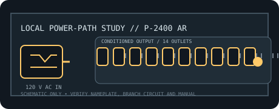

[ RACKMOUNT LINE CONDITIONER // EXACT MODEL ]
Furman P-2400 AR
High-current 20 A rackmount True RMS voltage regulator and conditioner for a nominal 120 V rack power system; it has no battery or outage runtime.

ARCHIVAL IDENTIFICATION: Preserve exact model and regional suffix, nameplate, serial/date code, outlet map, manual revision and observed condition. Similar product-family names do not prove electrical equivalence.
Model specifications
| Manufacturer / exact model SKU | Furman P-2400 AR. Verify full regional suffix and revision from the physical nameplate. |
|---|---|
| Catalog category / topology | Line conditioners — rackmount AC conditioner; automatic voltage regulator. No battery or stored-energy backup. |
| Input voltage / supported range | 120 V AC nominal; approximate manufacturer input-voltage capture range 97–137 V AC. |
| Output voltage / range | Regulated 120 V AC, ±5 V within the supported range. |
| Capacity / current | 20 A maximum (2400 VA class at nominal voltage); requires an appropriately rated supply circuit and connector. |
| Regulation / conditioning functions | True RMS voltage regulation, LiFT noise filtering, SMP surge/spike protection and EVS shutdown for unsafe input voltage. |
| Outlets / connectors | Fourteen total: twelve rear-panel outlets and two front convenience outlets; all share the unit’s 20 A limit. |
| Response / continuity | Regulates within the capture range; the cited sheet does not give AVR correction time. SMP surge-response figure is 1 ns. No battery or outage transfer. |
| Compatibility | 120 V North American rack equipment within the shared 20 A output rating; the 20 A input connection/circuit must match the exact regional unit. |
| Electrical safety / installation limits | Use a correctly wired, grounded 20 A circuit and matching plug; never adapt to an undersized branch circuit. Maintain protective earth and ventilation. Verify exact model revision and current draw before connecting. |
Service and archival notes
- Record the AC source, loaded current, connected equipment, observed voltage and test conditions separately from manufacturer-rated values.
- This is a conditioning/distribution appliance, not a UPS: it cannot maintain output through a mains interruption.
- Never open energized mains equipment. Quarantine units with damaged cords, overheated connectors, compromised enclosure or grounding, or evidence of liquid ingress.
- Use the exact regional manual/nameplate for connector, branch-circuit, mounting, grounding and load requirements; this static record is not an installation approval.
Manufacturer sources and manual
- Furman manufacturer product page — P-2400 ARProduct-family overview and manufacturer-stated functions. Confirm the complete model label and regional variant.
- Furman official operating manual — P-2400 ARManufacturer instructions for ratings, connections, operation and electrical safety.
- Furman official datasheet — P-2400 ARManufacturer model specifications; ratings and feature details are revision-sensitive.